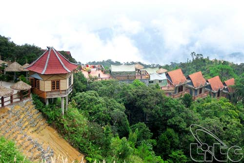

지리적 배경
다낭(Danang)은 중부 베트남의 대표적인 도시로서, 서쪽으로는 쯔엉 썬(Truong Son) 산맥을 경계로 라오스와 인접하고 있다. 북쪽으로는 트어 티엔-후에(Thua Thien-Hue)와, 남쪽으로는 꽝남(Quang Nam)성과 접하고 있는 이 지역은 동해(East Sea)에 둘러싸여 150킬로미터에 달하는 해변을 보유하고 있다.

다낭의 지형은 다소 복잡하다. 남쪽으로는 하이반 고개(Hai Van Pass)와 망 산(Mang Mountain, 1,708m), 바 나 산(Ba Na Mountain, 1,487m)이 자리하고, 동쪽에서는 썬짜 반도(Son Tra Peninsula)와 해변, 유적지, 희귀 동식물종 등을 만나볼 수 있으며, 남쪽에는 응우 한 썬(Ngu Hanh Son, ‘대리석산’이라 불림)이 있다. 이 지역의 해변은 풍부한 어장의 호앙 사(Hoang Sa) 군도로 이루어져 있다.
